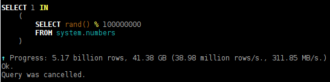

What is the CPU busy with? What is the bottleneck?

Alexey, ClickHouse developer.
... and common truths.
— processor;
— memory;
— disk;
— network.
... and the program might also be blocked on sleep.
Resource utilization is an aggregated value,
which usually doesn't give the full picture.
If a resource is utilized at «100%»
— it doesn't mean we can't do better.
If a resource is utilized at less than 100%
— it doesn't mean we can do better.
Looking at CPU utilization in top, htop, etc.
If they show that a CPU core is loaded at 100%, the processor is executing instructions, but:
— the processor can execute different numbers of instructions per cycle;
— the processor can wait for data loading from memory or cache,
but this time is also counted as CPU utilization (perf record);
— the processor can run at reduced frequency (turbostat, dmesg);
If they show that CPU is loaded at 50% in total:
— perhaps more doesn't make sense,
if Hyper-Threading doesn't give much benefit on your code;
— perhaps you're looking at an averaged value, while
at certain moments in time, the processor is fully loaded.
... or SSD.
The program spends all time reading from disks, but iostat shows utilization less than 100%:
— you have a RAID array, but you're reading with insufficient buffer size
with O_DIRECT or without readahead — disks are used
not all in parallel;
— you have RAID-10, but you created it with near, not far layout in mdadm;
— you have RAID-5/6, but incorrect stripe cache size is set;
— you're doing random reads with insufficient degree
of parallelism
(for SSD use only AIO (io_submit)
for random reads).
Also: always compress data stored on disk.
If you're not sure whether to compress data stored on disk,
see the HighLoad++ Siberia 2018 talk «How to Speed Up LZ4 Decompression»:
https://youtu.be/V2CqQBICt7M
Linux shows that the system has almost no free memory:
— don't look at free memory: https://www.linuxatemyram.com/.
Top shows that the process used more memory than available:
— don't look at VIRT memory for the process (large address space size is normal, look at RSS).
Graphs show that the process doesn't release memory:
— modern allocators (almost) don't return memory to the system directly.
Also: don't enable swap;
The program spends all time transferring data over the network,
but the network is not utilized:
— perhaps you're creating new TCP connections
for each data transfer;
— perhaps you're using one TCP connection
for transferring files on a network with significant packet loss;
— perhaps you're sending data in small chunks
with TCP_NODELAY.
Also: always compress data transmitted over the network.
top, htop: CPU, memory by processes;
dstat: IO, network, ...;
iostat: IO by devices;
iotop: IO by processes;
iftop: network by hosts;
perf top: CPU by functions in processes;
SHOW PROCESSLIST
Or SELECT * FROM system.processes
SELECT * FROM system.merges
«clickhouse top»:
watch -n1 'clickhouse-client --query="SHOW PROCESSLIST"'
system.query_log
— enabled globally, per user, per session, or per query;
— setting log_queries = 1;
— queries are logged twice: at the beginning and end of execution.
system.part_log
— enabled globally in config.xml;
— all operations with MergeTree data are logged.
Writing to system tables is asynchronous.
(once every 7 seconds). SYSTEM FLUSH LOGS for forced flush.
— export query stream
and load using clickhouse-benchmark:
clickhouse-client --query="
SELECT query FROM system.query_log
WHERE type = 2 AND event_date = today()
" > queries.tsv
clickhouse-benchmark < queries.tsv
— find the first query after which everything went bad;
— look at resource breakdown by users.
SET send_logs_level = 'trace'
— logs are sent from all servers
participating in query processing
(distributed tracing);
Global:
— system.events;
— system.metrics;
— system.asynchronous_metrics.
Per query:
— system.processes;
— system.query_log.
Per query execution thread:
— system.query_thread_log.
User-space:
— FileOpen;
— NetworkReceiveElapsedMicroseconds;
— ReadBufferFromFileDescriptorReadBytes...
Kernel-space:
— OSReadChars;
— OSReadBytes;
— OSIOWaitMicroseconds;
— OSCPUWaitMicroseconds;
— UserTimeMicroseconds;
— SoftPageFaults...
| Metric | First Run | Second Run |
|---|---|---|
| Total time | 6.7 sec | 1.3 sec |
| ...FileDescriptorReadBytes | 2.56 GiB | 2.56 GiB |
| ReadChars | 2.56 GiB | 2.56 GiB |
| ReadBytes | 3.23 GiB | 3.13 MiB |
| IOWait | 87.3 sec | 0.023 sec |
| CPUWait | 0.027 sec | 0.045 sec |
| UserTime | 9.9 sec | 13.4 sec |
| SystemTime | 2.4 sec | 2.2 sec |
Website: https://clickhouse.com/
Google groups: https://groups.google.com/forum/#!forum/clickhouse
Mailing list: clickhouse-feedback@yandex-team.com
Telegram chat: https://telegram.me/clickhouse_en and https://telegram.me/clickhouse_ru (already 2000 members)
GitHub: https://github.com/ClickHouse/ClickHouse/ (already 5300 stars)
+ meetups. Next one in Amsterdam on November 15!
https://events.yandex.com/events/meetings/15-11-2018/